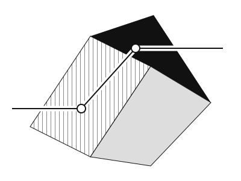
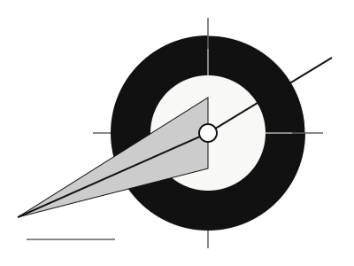
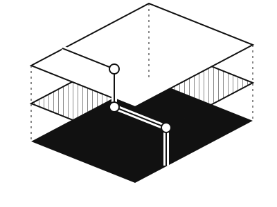
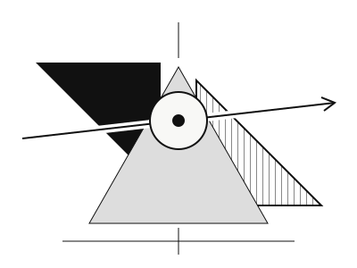
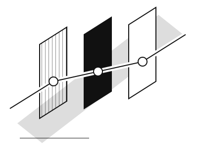

01 / Folded signal
A ribbon cuts through suspended planes.

A ribbon cuts through suspended planes.

A focused beam passes through a segmented ring.

Offset layers hold a single continuous trace.

Two opposing masses pivot around a latent state.

One route emerges through a field of gates.